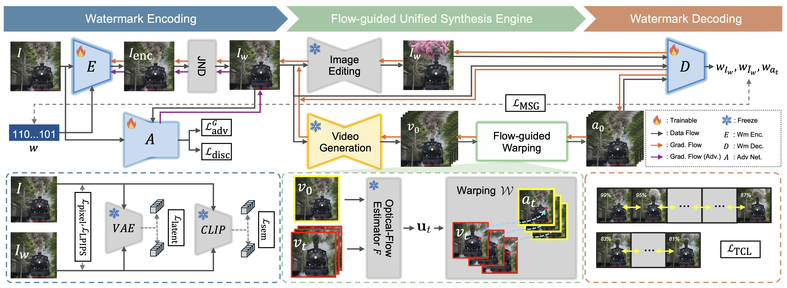
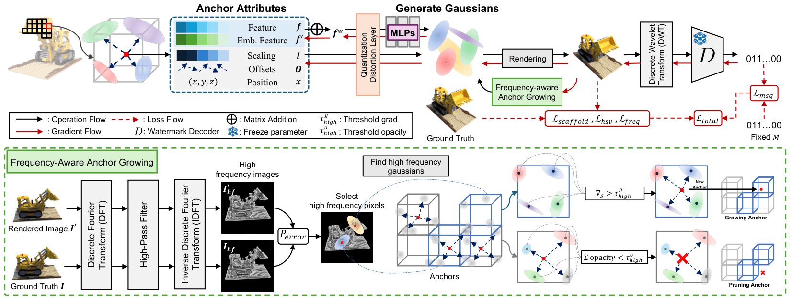
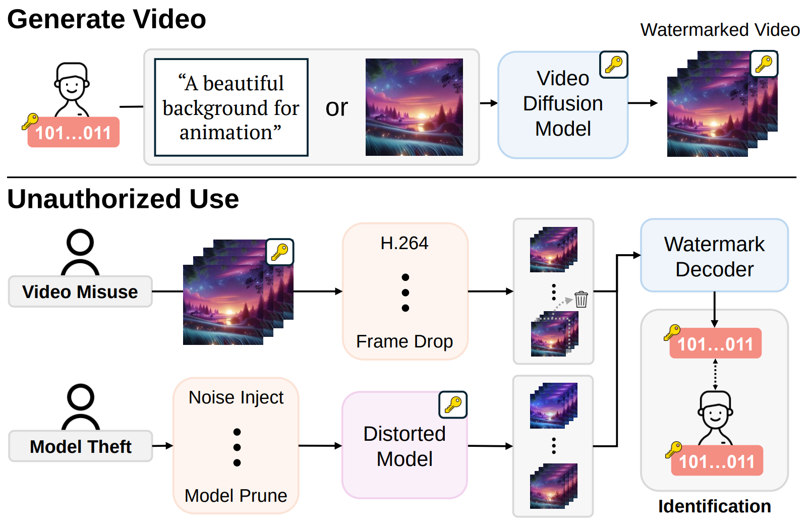

논문 대표 이미지논문 보기이미지 · 영상 워터마킹
WaTeRFlow
흐름 일관성을 활용해 이미지가 영상으로 변환된 이후에도 워터마크의 강인성을 높이는 연구입니다.
GitHub 코드 보기 — WaTeRFlow (새 탭)연구개발 과제
과제번호 RS-2024-00345025
2026 OPEN SOURCE · OPEN POSSIBILITIES
생성형 AI 저작권 보호부터 영상 생성, 3D, 멀티모달 AI까지.
공개된 연구 소프트웨어에서 다음 연구의 출발점을 찾아보세요.
FEATURED RESEARCH
이미지에서 영상으로, 영상에서 3D로.
콘텐츠 보호의 범위를 넓히는 연구를 소개합니다.

논문 대표 이미지논문 보기이미지 · 영상 워터마킹
흐름 일관성을 활용해 이미지가 영상으로 변환된 이후에도 워터마크의 강인성을 높이는 연구입니다.
GitHub 코드 보기 — WaTeRFlow (새 탭)
논문 대표 이미지논문 보기3D Gaussian Splatting
3D Gaussian Splatting 콘텐츠를 위한 워터마킹으로, 압축 과정에서의 보호 신호 유지와 검증을 연구합니다.
GitHub 코드 보기 — CompMarkGS (새 탭)
논문 대표 이미지논문 보기잠재 비디오 확산 모델
잠재 비디오 확산 모델을 대상으로, 생성 영상에 적용할 수 있는 강인한 워터마킹 기법을 연구합니다.
GitHub 코드 보기 — LVMark (새 탭)EXPLORE THE CODE
관심 분야를 고르고, 연구의 구현을 살펴보세요.
각 프로젝트에서 GitHub 저장소로 바로 연결됩니다.
전체 32개 연구 소프트웨어 · 소개자료 원문 제공
자료 수록순 · 주요 기술 우선다른 키워드를 입력하거나 전체 분야에서 다시 찾아보세요.
FROM RESEARCH TO YOUR NEXT IDEA
저작권 보호, 영상, 3D 등 분야별 목록에서 필요한 기술을 탐색합니다.
각 저장소의 README에서 연구 설명, 설치 환경, 실행 방법과 라이선스를 확인합니다.
논문과 연결된 구현을 살펴보고, 각 저장소에 안내된 방법으로 연구를 재현하고 활용합니다.
RESEARCH SOFTWARE COLLECTION · 2026
32개 연구 SW의 공개 기록과 과제 소개를 담은 홍보자료입니다.